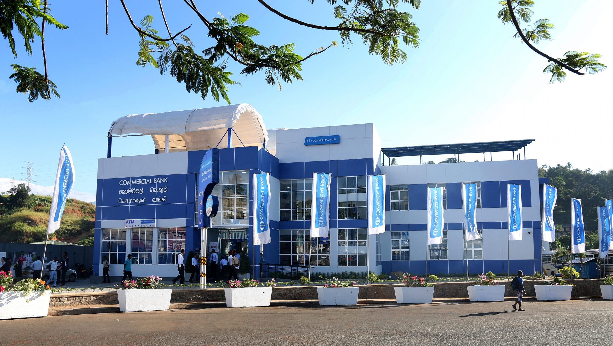

The name bank derives from the Italian word banco "desk/ bench", used during the Italian Renaissance era by Florentine bankers, who used to carry out their transactions on a desk covered by a green tablecloth.[1] However, traces of banking activity can be found even in ancient times. In the United States, the term commercial bank was often used to distinguish it from an investment bank due to differences in bank regulation. After the Great Depression, through the Glass Steagall Act, the U.S. Congress required that commercial banks only engage in banking activities, whereas investment banks were limited to capital market activities. This separation was mostly repealed in 1999 by the Gramm Leach Bliley Act. Role